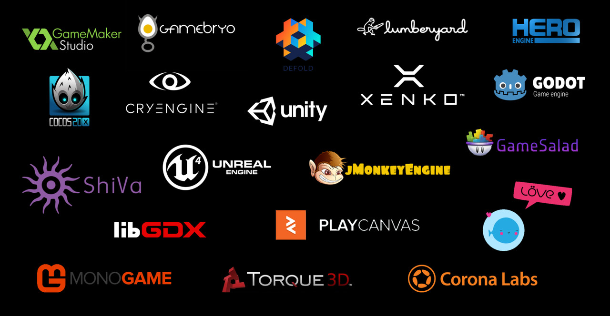

The Little Game Engine That Could
Final project for CS5850: Building Game Engines, Spring 2023
Designers: Nishanth Duraiarasu, Mateus Aurelio, Evan Haines, B. Lucian Tisdale
Video Presentation
Screenshots

Documentation
Doxygen files
Engine Architecture
Post mortem